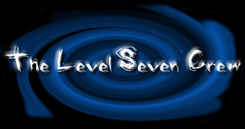

| L.p. | Nazwa organizacji hakerskiej | Krótki opis | Logo organizacji |
|---|---|---|---|
| 1. | Anonymous | Globalna, zdecentralizowana grupa aktywistów sprzeciwiająca się ograniczaniu wolności obywatelskich, korupcji, konsumpcjonizmowi, cenzurze, fair use, wpływowi Kościoła katolickiego na życie publiczne oraz łamaniu praw zwierząt. |
|
| 2. | LulzSec | Globalna grupa crackerów i trolli internetowych, która powstała na chanach, takich jak 4chan. Grupa znana jest z wielu ataków, m.in. z wyłączenia strony głównej CIA oraz ataku na SonyPictures. Lulz Security wzajemnie zwalcza się z Anonymous, jednak w 2011 roku ugrupowania te połączyły się, aby wspólnie wykonać operację AntiSec. |
|
| 3. | Lizard Squad | Grupa hakerska typu black hat, która znana jest głównie z ataków DDoS przeprowadzanych w celu zakłócenia usług związanych z grami. |
|
| 4. | globalHell | Grupa hakerów składająca się z około 60 osób. Rozpadła się ona w 1999 roku, kiedy jej 12 członków zostało skazanych za włamania do komputera, a 30 za pomniejsze przestępstwa. |
|
| 5. | PLA Unit 61398 | Jedna z jednostek Chińskiej Armii Ludowo-Wyzwoleńczej zajmujących się prawdopodobnie włamaniami komputerowymi. |
|
| 6. | Level Seven | Level Seven Crew, znana także jako Level Seven, Level 7 lub L7, była grupą hakerską powstałą w końcu lat 90. Rozpadła się ona prawdopodobnie na początku 2000 roku po akcji FBI przeprowadzonej 25 lutego tegoż roku. |
 |
| 7. | TeaMp0isoN | Grupa badawcza zajmująca się bezpieczeństwem komputerów, składająca się z 3 do 5 głównych członków. Grupa zyskała rozgłoś na przełomie 2011 i 2012 roku ze względu na swoje działania hakerskie typu black hat, które obejmowały ataki na ONZ, NASA, NATO, Facebook, fora Minecraft Pocket Edition i inne duże korporacje i podmioty rządowe. Po aresztowaniu niektórych jej głównych członków organizacja została rozwiązana w 2012 roku. |
|
| 8. | ShadowCrew | ShadowCrew to forum dyskusyjne poświęcone cyberprzestępczości, które działało pod nazwą domeny ShadowCrew.com od sierpnia 2002 do listopada 2004. |
|
| 9. | Chaos Computer Club | Niemieckie stowarzyszenie zrzeszające ok. 4 tys. członków (hakerów) z krajów niemieckojęzycznych. Jest jedną z największych oraz najbardziej wpływowych tego typu organizacji. |
Informacje pochodzą z serwisu: pl.wikipedia.org |